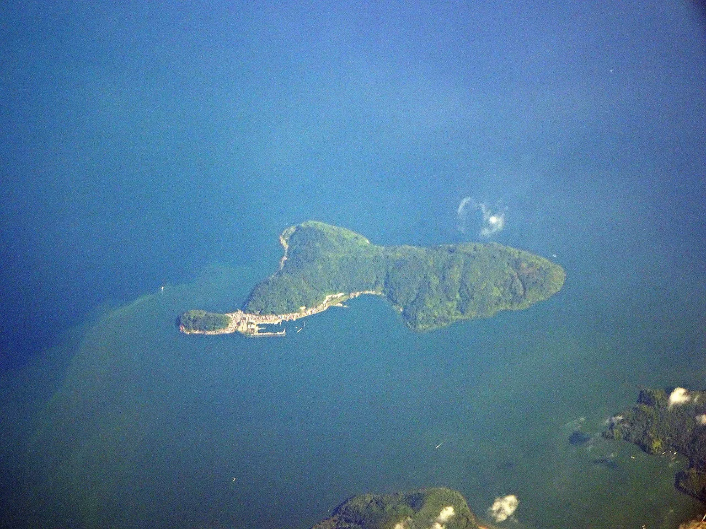
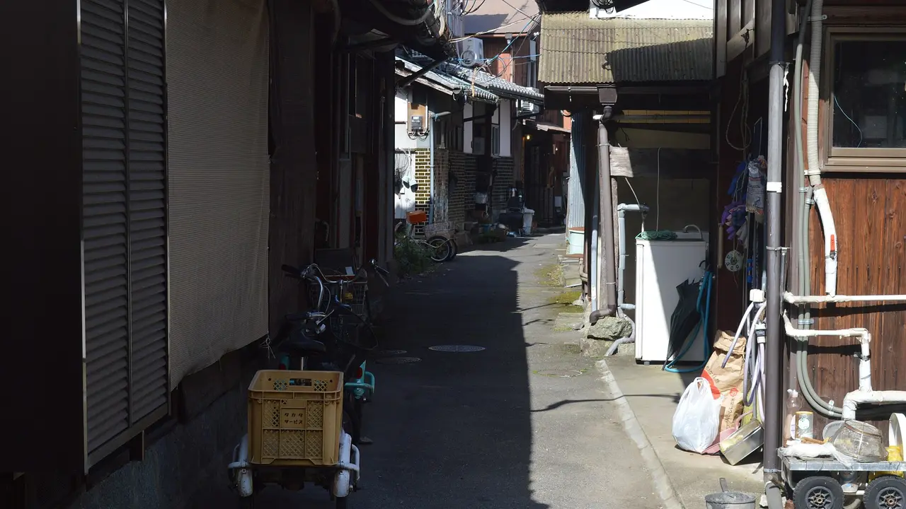
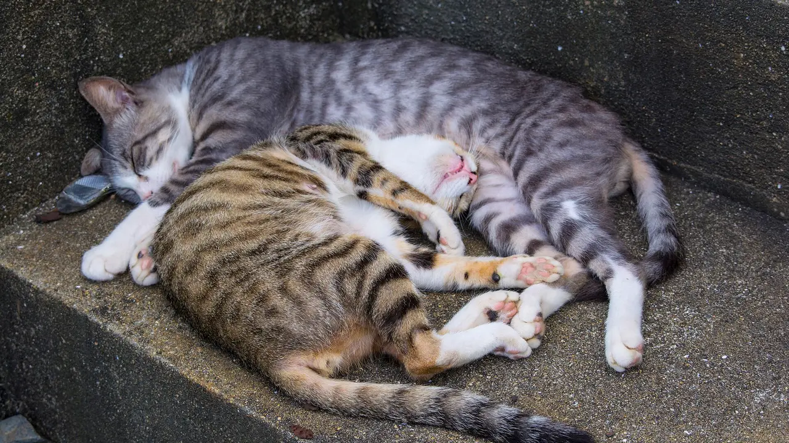
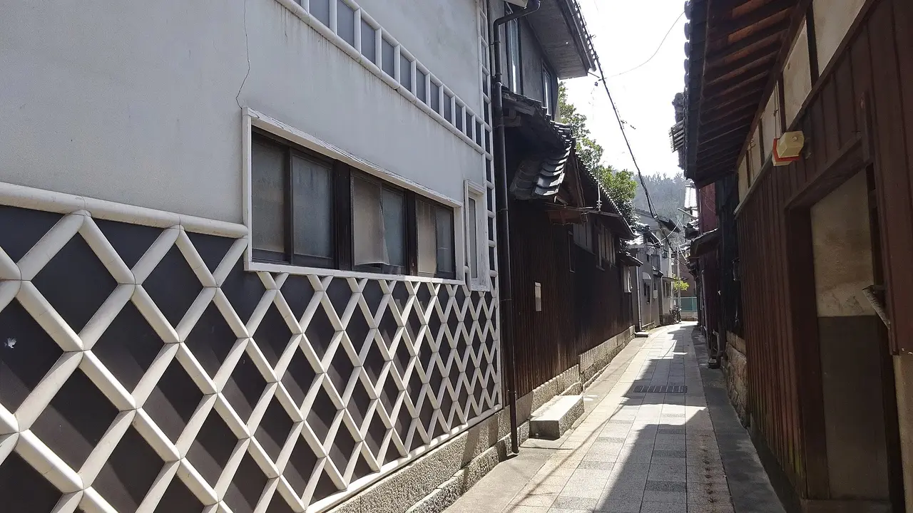
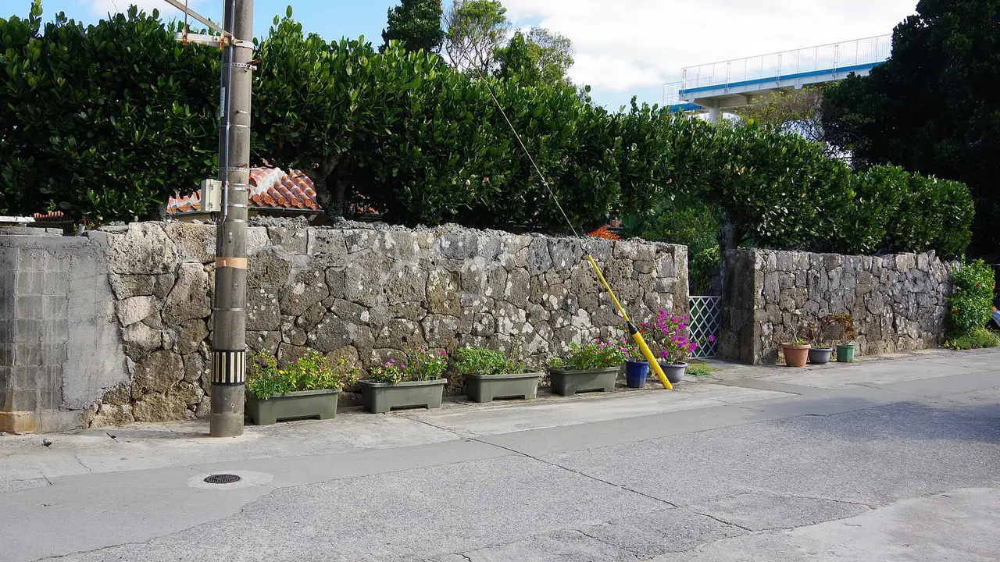
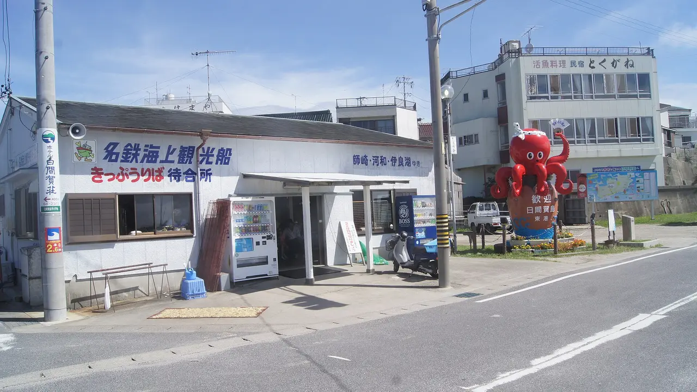

Japanese islands you can walk around in a day
Japan has 388 inhabited islands, and we hold measurements for all of them — area, coastline, population, elevation and annual visitors. Run the numbers and something useful falls out: 176 of them have under 20 km of coastline and at least 50 residents. At an ordinary walking pace that is a day, often an afternoon. No car, no licence, no rental desk. This piece is the shortlist that came out of that data, with one column no other island guide has — how many visitors each island gets per resident, so you know in advance whether you are getting a quiet lane or a queue.

How this was worked out, and what it does not tell you
The method is deliberately simple. Coastline length divided by 4.5 km/h gives a rough circuit time. Annual visitors divided by resident population gives a crowding ratio. Both come from the same dataset behind our regional island guides.
Coastline is not a footpath. This is the honest limit of the method. A 7 km coastline means the island is small; it does not promise a road or a trail that goes all the way round. Some islands have a complete loop, some have a road that stops at a headland, some are mostly cliff. Where a full loop is known to exist we say so — otherwise treat the figure as scale, not as a route. Published local descriptions also differ from the survey coastline: Ainoshima is often described locally as "5 km around" against a measured 6.9 km, because a walking route and a coastline are different things.
Eight islands, measured
Sorted by circuit time. Visitor figures are annual and come from the same dataset; a dash means no figure is recorded.
| Island | Prefecture | Coast | Walk | Residents | High point | Visitors/yr | Per resident |
|---|---|---|---|---|---|---|---|
| Enoshima江の島 | Kanagawa | 5.0 km | 1.1 h | 368 | 60 m | 8,485,000 | 23,057× |
| Himakajima日間賀島 | Aichi | 6.6 km | 1.5 h | 1,896 | 32 m | 247,000 | 130× |
| Okishima沖島 | Shiga | 6.8 km | 1.5 h | 287 | 220 m | 25,100 | 87× |
| Ainoshima相島 | Fukuoka | 6.9 km | 1.5 h | 267 | 77 m | 19,800 | 74× |
| Manabeshima真鍋島 | Okayama | 7.5 km | 1.7 h | 201 | 127 m | 7,400 | 37× |
| Toshima利島 | Tokyo | 7.7 km | 1.7 h | 337 | 508 m | 3,228 | 10× |
| Kudaka久高島 | Okinawa | 8.0 km | 1.8 h | 206 | 17 m | 60,516 | 294× |
| Shinojima篠島 | Aichi | 8.2 km | 1.8 h | 1,653 | 49 m | 208,000 | 126× |
Two numbers in that table do most of the work. The high point tells you whether "walkable" means flat: Toshima is 7.7 km around and 508 m high, which is a hill walk, not a stroll. The per-resident ratio tells you what kind of day it will be — Enoshima receives more than twenty-three thousand visitors for every person who lives there, and Toshima receives ten.
The ones worth the ferry
Okishima, Shiga — the only inhabited island in a Japanese lake

This is the one that surprises people. Okishima sits in Lake Biwa, and it is the only populated freshwater island in Japan — roughly 300 people living on 1.5 km² with a 6.8 km shoreline, supported by the country's only lake-based commercial fishing community. Island tradition traces the settlement to Genji warriors who came ashore after the disturbances of 1156–1159.
There are no cars. Residents get about by bicycle and on foot, which is exactly why the lanes feel the way they do. There are also a great many cats. It is close enough to Kyoto to be a genuine half-day.
Reach it from Ōmihachiman in Shiga, which is about ten minutes from Kyoto by rail before the local leg to the port. See the Shiga guide.
Ainoshima, Fukuoka — an hour from a city of 1.6 million

The most accessible island on this list. Ainoshima is about 20 minutes by ferry from Shingu fishing port, and roughly an hour door to door from central Fukuoka. It is one of the few where a complete walking loop is well established — local guides put the circuit at about 5 km against the measured 6.9 km of coastline.
It is a cat island, and honestly that is why most people come. It is also a working fishing village of 267 people that receives around 19,800 visitors a year, which is busy but not overwhelming.
Bring your own food and water; facilities are minimal. See the Fukuoka guide.
Manabeshima, Okayama — the quietest of the accessible ones

At 37 visitors per resident, Manabeshima is the least trampled island here that you can still reach on a normal day. It is a fishing village in the Seto Inland Sea off Kasaoka, 201 people, and the reason people photograph it is that the streets look like 1965.
Ferries run from Sumiyoshi Port in Kasaoka: roughly 44 minutes by high-speed boat with about three sailings a day, or about 70 minutes on the regular boat with about five. Most visitors stay two to four hours, which the numbers say is about right — the walk is 1.7 hours if you do not stop, and you will stop.
Plan around the timetable rather than the walk; the last boat decides your day. See the Okayama guide and our Seto Inland Sea islands guide.
Kudaka, Okinawa — walkable, but not an ordinary walk

Kudaka is 8 km around and almost completely flat, which makes it the easiest circuit on the list physically. It is also the island where, in Ryukyuan belief, the creation deity Amamikiyo came down from the sky, and rituals are still held there. That changes how you walk it.
The rules are real and posted. Do not remove stones, sand, coral, plants or coconut crabs from the island — anything at all. Kubō Utaki, the most sacred site, is closed to entry all year. Keep skin covered and do not walk around in swimwear. Keep your voice down, do not photograph people at worship, and stay out of paths you cannot see the end of.
About 30 minutes by ferry from Azama Port in Nanjō, southern Okinawa. Bicycle rental is common and is the usual way to see it in half a day. See the Okinawa guide and our Nansei islands guide.
Himakajima and Shinojima, Aichi — an hour from Nagoya, and full of octopus

These two sit ten minutes apart in Mikawa Bay and both are walkable — Himakajima 6.6 km, Shinojima 8.2 km. Himakajima is the closest of Aichi's islands to Nagoya, reachable in about an hour by Meitetsu to Kowa Station, eight minutes on foot to Kowa Port, then roughly 20 minutes by high-speed boat.
The draw is food. Himakajima is known for octopus and for fugu, and the restaurants near the west port build their menus around it. Shinojima has the bigger fish market and a white-sand beach about 15 minutes' walk from the terminal. At 130 and 126 visitors per resident they are properly busy in summer and pleasant out of season.
The two together make a good full day. See the Aichi guide.
The one to skip, and why the number matters
Enoshima in Kanagawa is 5 km around, an hour's walk, an hour from Tokyo, and by our measure the most visited island in Japan relative to its size: 8.485 million visitors against 368 residents, or 23,057 visitors per resident. It is genuinely worth seeing, and it is the opposite of what this article is about. If you want an island walk, that number is the warning.
The useful comparison is Toshima, also in Tokyo Prefecture but out in the Izu chain: 337 residents, 3,228 visitors a year, ten per resident. It is 7.7 km around and 508 m high, and the ferry does not always land in rough weather. Two islands, same prefecture, a factor of two thousand between them.
A rule of thumb from the data. Under about 50 visitors per resident and you will have the lanes largely to yourself. Between 50 and 300 you will meet other people but the island still belongs to the people who live there. Above about 1,000 you are visiting an attraction that happens to be surrounded by water.
Practical notes for island walking
| Thing | What to know |
|---|---|
| The last ferry | Decides everything. Check it before you plan the walk, not after. Small-island services often run three to five times a day. |
| Weather | Sailings are cancelled in rough seas, sometimes at short notice. Do not schedule a flight the same evening. |
| Food and water | Many of these islands have no shop, or one that keeps its own hours. Carry lunch. |
| Cash | Assume cash only. See where cash is still required in Japan. |
| Toilets | Usually at the port and rarely elsewhere. |
| Residents | These are working villages, not open-air museums. Lanes run between people's front doors — do not photograph into houses. |
The Japanese you'll meet
| Japanese | Reading | What it means |
|---|---|---|
| 離島 | ritō | Remote island. The word in every ferry timetable and subsidy scheme. |
| 定期船 | teikisen | Scheduled boat. What you are actually catching. |
| 高速船 | kōsokusen | High-speed boat — faster, dearer, and cancelled more readily. |
| 欠航 | kekkō | Cancelled sailing. The word you least want to see on the board. |
| 最終便 | saishūbin | The last service of the day. |
| 周囲 | shūi | Circumference — the figure islands quote about themselves. |
| 御嶽 | utaki | A sacred site in Okinawa. Many are closed to visitors. |
| 島民 | tōmin | Islander, resident. Signs asking for consideration are addressed on their behalf. |
Common questions
Which one should I do first? Ainoshima from Fukuoka or Himakajima from Nagoya. Both are about an hour from a major city and neither needs planning beyond the ferry time.
Can I really walk all the way round? On some, yes. On others the road stops. Coastline tells you the island is small, not that a loop exists — check locally before committing to a circuit.
Do I need a car anywhere? No. That is the point of the list. Several of these islands have almost no cars at all.
Is one day enough? For the walk, easily. For the island, often not — the ones with 40 or fewer visitors per resident reward staying, if there is lodging.
Where are the other 168? The regional guides below cover every inhabited island in Japan, grouped by sea and region, with access for each.
Where to go, what to eat, what to bring home — one Japanese region at a time, with the practical details guides leave out. Free, no spam, unsubscribe anytime.
Sources: coastline, area, population, elevation and annual visitor figures for all 388 inhabited islands from NihongoHub's island dataset, which underlies our six regional island guides; the walking times and visitors-per-resident ratios in this article are our own calculations from those figures (coastline ÷ 4.5 km/h; annual visitors ÷ resident population) and are presented as estimates, not as measured route lengths. Okishima's status as Japan's only populated freshwater-lake island, its lake fishing community, the tradition tracing settlement to warriors displaced by the disturbances of 1156–1159, and the absence of cars, from Shiga prefectural tourism materials and published Lake Biwa references. Ainoshima's roughly 20-minute ferry from Shingu fishing port, its approximately one-hour journey from central Fukuoka, its locally described 5 km walking circuit and its CNN listing among the world's best cat locations, from Fukuoka tourism and travel sources. Manabeshima's ferries from Sumiyoshi Port in Kasaoka — about 44 minutes by high-speed boat with roughly three daily sailings and about 70 minutes on the regular boat with roughly five — and the typical two-to-four-hour visit, from Okayama travel sources. Kudaka's roughly 30-minute ferry from Azama Port in Nanjō, its approximately 8 km circumference, its status in Ryukyuan belief as the place where Amamikiyo descended, the year-round entry prohibition at Kubō Utaki, and the rules on removing natural material, dress, noise and photography, from Okinawa tourism materials. Himakajima's roughly one-hour access from Nagoya via Meitetsu to Kowa Station, the eight-minute walk to Kowa Port and roughly 20-minute high-speed boat, its 6.6 km circumference, its octopus and fugu, and Shinojima's fish market and beach about 15 minutes from the terminal, from Aichi tourism materials. Ferry timetables, sailing frequencies and cancellation policies change seasonally and in bad weather — confirm with the operator on the day.